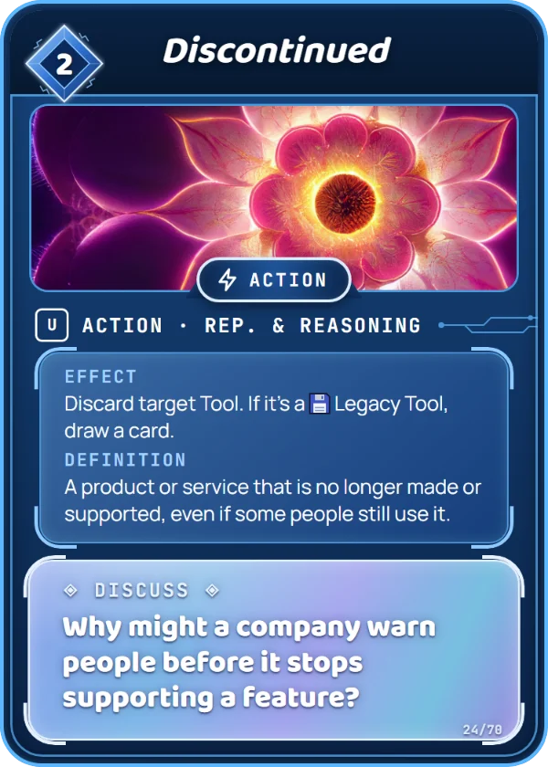

Representation & Reasoning
A product or service that is no longer made or supported, even if some people still use it.
When a company stops supporting a gadget, it may stop getting updates and safety fixes, even though it still turns on.
Why might a company warn people before it stops supporting something? Write the warning message you'd send.
Why might a company warn people before it stops supporting a feature?
Discard target Tool. If it's a Legacy Tool, draw a card. It costs 2 Data to play, and you can put it in your Training Set. How to play